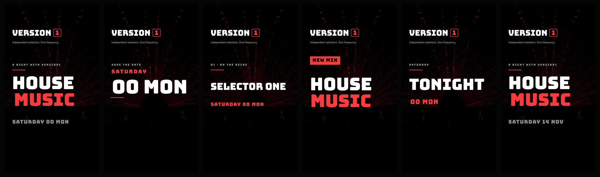

01 / Night Announcement
The full reveal. HOUSE from the left, MUSIC from the right, then the selectors, the date and room, and the way in.
MP4 · Project · FramesA series of 15-second Reels built on the Version1 identity: black, white and one signal of red, over real footage of a laser rig in a dark room. The logo spirals in, slides up to the top and stays; four sections then assemble a piece at a time, hold, and come apart again. Eight bars at 128 BPM, so every cut lands on a downbeat once you drop a mix underneath.
1080 × 1920 · 30 FPS · 15.000 SECONDS · H.264
The full reveal. HOUSE from the left, MUSIC from the right, then the selectors, the date and room, and the way in.
MP4 · Project · FramesThe reminder. Date first and biggest, then the room, the selectors and the way in. For when the night is already known.
MP4 · Project · FramesThe line-up. One selector per section, each arriving from the opposite side, then all three together for the night itself.
MP4 · Project · FramesThe music pillar. A release rather than a night: the title, who is in it, the sound and where to hear it.
MP4 · Project · FramesThe day of. TONIGHT, then doors, then the decks, then where to come. Fewest words, biggest type.
MP4 · Project · FramesThe real one. TonyT, Moss_b and Smiley Jack. Saturday 14 November, 8pm till late, free entry.
MP4 · Project · CaptionThe five designs are meant to be rotated so the feed keeps moving without repeating itself. A suggested run-up to a night:
| When | Post | Why |
|---|---|---|
| Three weeks out | Night Announcement | Everything at once: sound, selectors, date, room. |
| Two weeks out | The Selectors | Hands the night to the DJs and their own accounts. |
| One week out | Save the Date | Quiet reminder. One date, nothing else to read. |
| Any week | Mix Drop | Keeps the account about music between nights. |
| On the day | Last Call | Doors, entry and the address, nothing more. |
In the video studio open Templates → Version1 Events and pick a design. Every line is a named layer, so you edit the words in place. Add a mix excerpt through the Audio panel, keep the duration at 15 seconds so the cuts stay on the beat, then Save As and export. See the editing guide.
The generic five carry placeholder copy. Replace every date, venue and name before posting.
The background is a graded stock clip, not a Version1 night. To use your own, drop a 1080 × 1920 file into public/assets/version1/ as red-lasers.mp4 — nothing in the templates needs to change. Source, licence and the exact grade.
